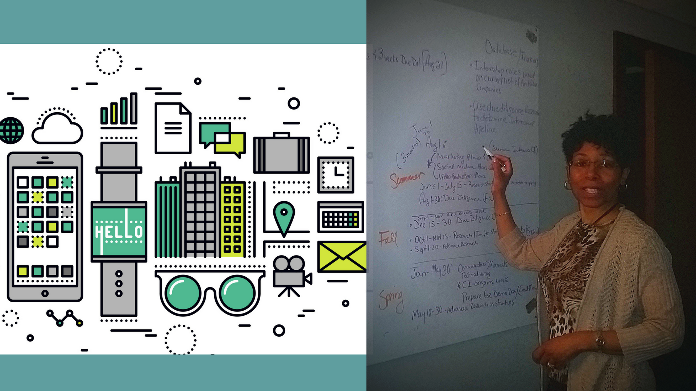

Front-End Web Development & User Documentation
Completing the Savvy Coders Front-End Web Development Bootcamp was a great way to jumpstart my technology skills. The coding skills I'm learning compliment my end-user documentation skills.
-
Analyst
The ability to think like a developer and use JavaScript and tools of the trade go hand-in-hand with my ability to analyze the needs of an audience and produce products, services, training and documentation that meet their needs. -

Designer
Planning the flow, interactions, and content of the users' experience is part of the collaborative process. Our class Hack-a-Thons taught us how to work as small teams and cross-development teams. We learned to take a part of an assignment and merge our code contributions using GitHub Pull Requests. -
Coder
Learning JavaScript objects, functions, arrays, and other coding best practices opens the door to building real world applications. MDN Web Docs, Savvy Coders Slack Channel and other means of support are available for our continued learning.
Tools like Atom, Windows PowerShell, Emmet, Browsers, and GitHub are like the canvas we paint code upon for display to the world.
Meet your go to resource for digital communications
Let me help you help your users interact with your products, services or processes to accomplish their goals.
Contact Me
Let's discuss how my skills, experience, professionalism and tenacity can meet your business needs.
contact me at ramonajonescareer@gmail.com
About Ramona
Graduate of Savvy Coders, life-long learner, writer, developer, personable collaborator with a "Go To & Can Do" attitude. I'm a solid, creative contributor and asset to any team.
I love using my skills to build and make things better. My current pursuit is building technical skills, mastering UX/UI and instructional design and training techniques to create more engaging products and services.
Let's Get Interactive!
Want to learn some fun facts about me? Play the Choose Your Own Adventure Game. I created this icebreaker in the Savvy Coders Boot Camp!
Play Game